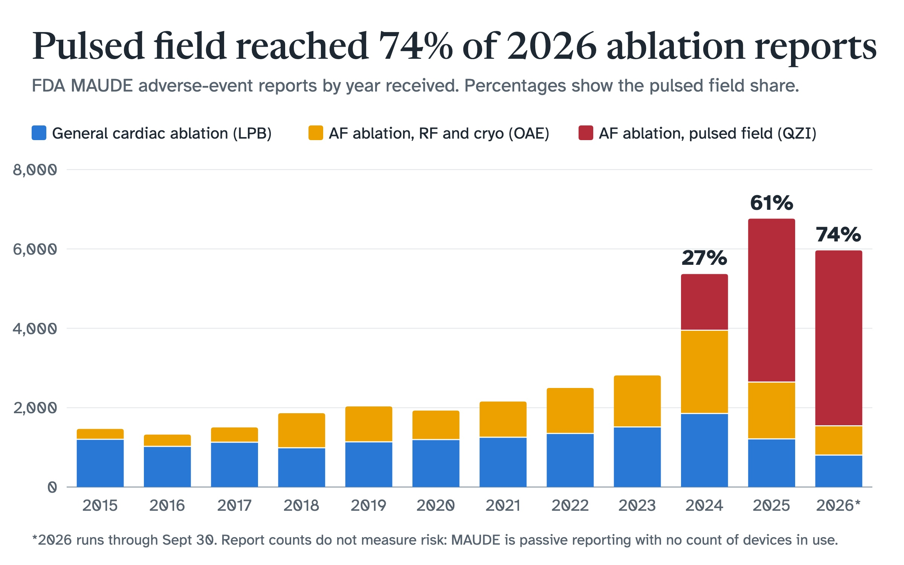

Cardiac Ablation Catheter Safety Monitor
Independent project, Fall 2026

Medical device safety teams read adverse-event reports to spot emerging problems, but the public data is hard to trust as it arrives. FDA's MAUDE database comes as nested JSON, with blanks coded as “NI” or “UNK”, the same manufacturer spelled many ways, and dates that are missing or out of order. I treated that as a data governance problem first and a visualization problem second, so that every number on the dashboard traces back to a defined field, a documented transformation and a quality score.
I built a Python pipeline that pulls reports from the openFDA API for three cardiac ablation catheter product codes: general ablation, radiofrequency and cryoablation for atrial fibrillation, and pulsed field ablation. It curates them into documented tables and feeds an interactive dashboard that drills down by product, year, event type, device problem, brand, manufacturer and country.
Across 35,655 reports received from 2015 through September 2026, pulsed field catheters went from 27% of reports in 2024, their first year in the data, to 74% in 2026.
Approach
- Extraction: paged pulls by product code and year, with retries, automatic splitting into months past the API's 25,000-record paging limit, and a raw JSONL layer that can be re-run. Yearly counts match openFDA's own totals exactly.
- Curation: flattens each report into an events table plus child tables for devices, device problems, patient outcomes and patient problems. It standardizes null codes and ages, and reduces 125 manufacturer spellings to 33 names.
- Data quality: 10 scored rules across uniqueness, validity, consistency, timeliness and completeness, each with a threshold and a Pass, Warn or Fail status. Every report carries its own issue list, so reviewers can filter to suspect records.
- Metadata and lineage: a 31-field data dictionary records each field's definition, source path, transformation and criticality. A lineage table records row counts at each stage of the run.
- Trustworthy metrics: counts are always distinct reports, so a report listing three device problems isn't counted three times.
- Testing: 13 pytest tests cover null handling, date and age parsing, manufacturer normalization, de-duplication, the quality rules and API paging.
What the data showed
- Reporting moved quickly to pulsed field. Yearly reports across all three codes rose from 2,811 in 2023 to 6,761 in 2025, while reports under the two older codes fell slightly, so pulsed field accounts for the whole increase.
- Nine of the 10 quality rules passed. The exception was timeliness: about 62% of reports with an event date were received within 30 days of the event, below the 80% threshold. This is only a proxy, because the regulatory 30-day clock starts when a manufacturer becomes aware of an event, not on the event date.
- Traceability fields have the largest gaps. Lot number appears on 74% of reports and a device identifier (UDI) on 52%. Patient age appears on only 28%.
Limits
MAUDE is passive surveillance. Reports can be incomplete or unverified, a report doesn't show that a device caused an event, and the number of devices in use is unknown. Report counts therefore can't measure risk or compare products: the rise in pulsed field reports may largely reflect how quickly these catheters were adopted. This is a portfolio project on public data, not a regulatory analysis, and it makes no claims about any manufacturer's products.
Next
Add a proportional reporting ratio by device problem, a standard signal-detection measure that doesn't need usage data. Then schedule the pipeline to refresh weekly and publish a Tableau version of the dashboard.